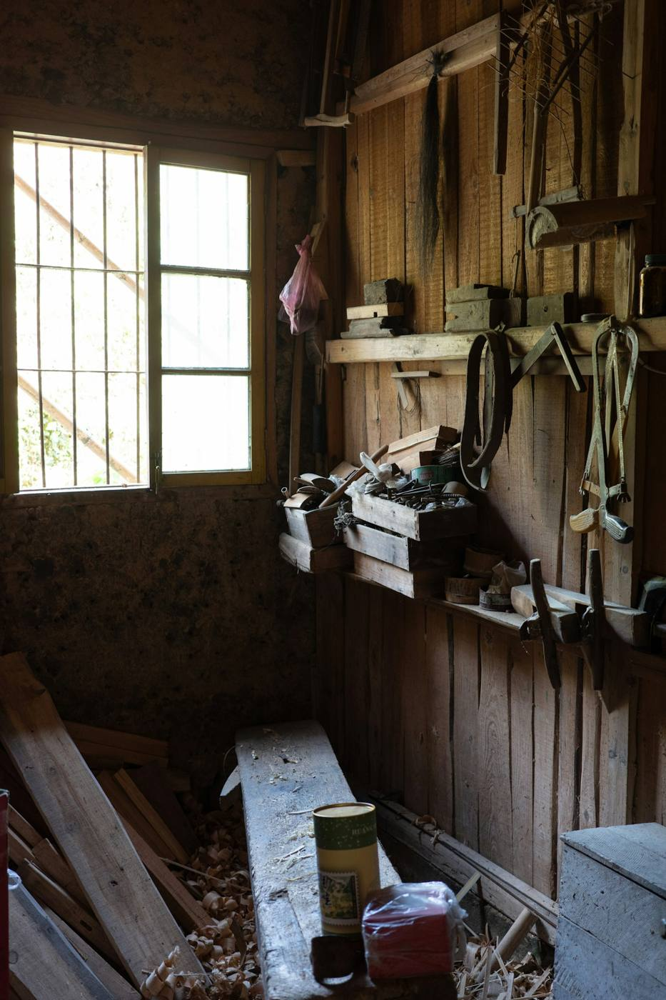

Au 27 rue de la République, le tiers-lieu accueille des artisans, des saisonniers, des groupes, des boutiques solidaires et des projets du Cap Sizun.

Des chambres à deux lits avec sanitaires communs, pour les saisonniers et les groupes, à environ un kilomètre de la mer.
Des espaces de travail occupés par des artisans et créateurs, et des résidences pour des projets ponctuels.
Des salles pour une journée de travail, une formation ou une rencontre, avec possibilité de restauration.
Des box à louer pour entreposer du matériel, des meubles ou un stock.
Vêtements de seconde main et objets, dans un esprit de réemploi.
Disponibilités, conditions et réservations se voient directement avec l'équipe, par téléphone ou par message sur Facebook et Instagram.